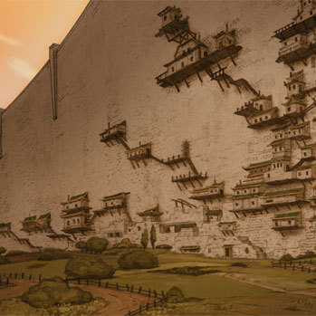
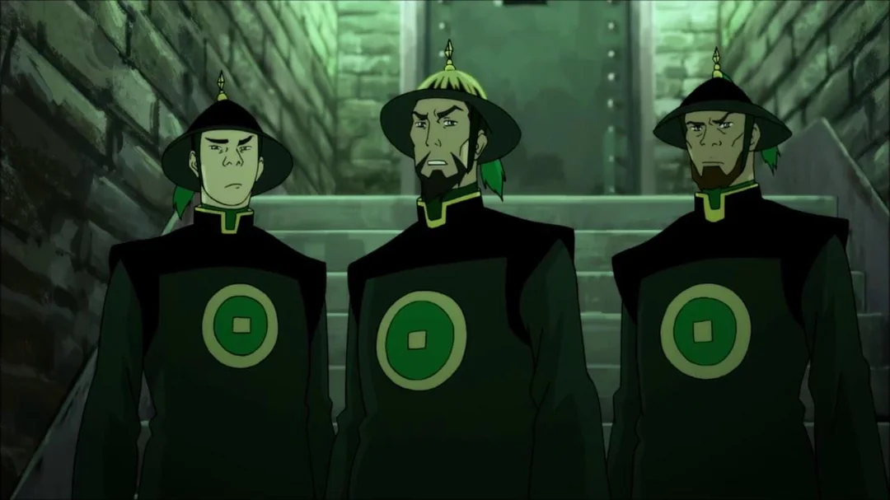
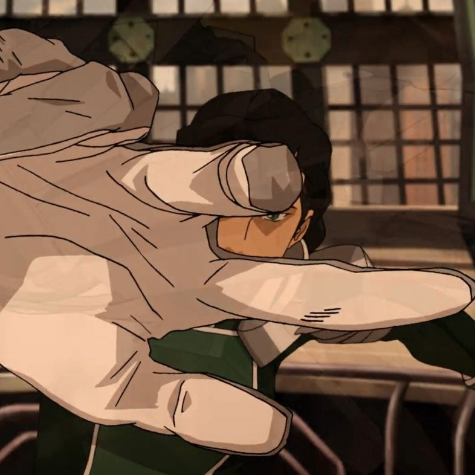
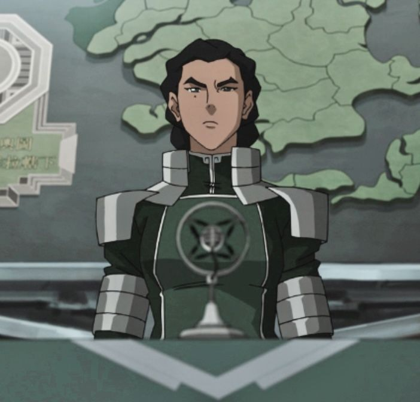

The Burden of Restoring Order
I was shaped by the walls of Ba Sing Se, by the weakness hidden beneath its ceremonies, and by the chaos that consumed the Earth Kingdom when those false foundations finally broke apart. I witnessed what happens when governments fear decisive action more than they fear suffering. I watched people abandoned by leaders so concerned with appearances to preserve stability. This is not a story about becoming a villain. It is a record of what became necessary.
Ba Sing Se: The Illusion of Stability

Ba Sing Se called itself eternal. It called itself unbreakable. It called itself safe.
But safety built on denial is not strength—it is delay.
I lived within its walls long enough to understand the truth no one inside wanted to face: Ba Sing Se did not maintain order. It performed an order. It hid poverty behind walls, unrest behind silence, and incompetence behind ceremony. The lower rings suffered, so the upper rings could pretend nothing was wrong. Every brick of that so-called "peace" was paid for with the invisibility of those deemed inconvenient to the image of stability.
The Great Wall was not a symbol of protection. It was a boundary for awareness. Inside it, people did not live truthfully—they lived comfortably inside ignorance. And ignorance , when protected long enough, becomes doctrine.
Officials spoke of tradition as if repetition could replace improvement. Guards enforced rules they did not question. Bureaucrats measured success by the absence of visible crisis, not the presence of justice. In Ba Sing Se, order was not maintained—it was curated. Carefully. Deliberately. And always at the expense of those without influence.
What the city called "peace" was simply the absence of accountability.

But absence is not peace. It is pressure without release. It builds quietly, layer upon layer, until even the strongest walls cannot contain it. And when it finally breaks, those who insisted everything was fine are always the most surprised.
I was not.
Because I did not mistake silence for stability, I did not confuse appearances with strength. I did not accept that suffering in the lower rings was an acceptable cost for comfort in the upper ones.
A nation that refuses to acknowledge its fractures is already broken. It only waits for someone strong enough to admit it.
I chose to be that acknowledgment.
And for the first time in Ba Sing Se's long, carefully edited history, the truth was no longer something it could lock behind its walls.
For too long, the Earth Kingdom has been weakened by indecision, fractured leadership, and empty promises of stability that never arrived. While leaders debated and delayed, the people suffered under disorder. Villages were left unprotected. Cities were left to decay. Entire regions were allowed to collapse into chaos while those in power spoke of "waiting for the right moment."
There is no right moment for collapse. There is only action or failure.
In this essay, I will show why unity is not achieved through discussion but through decisive structure. I will explain why a nation as large and unstable as the Earth Kingdom cannot survive on fragmented authority and competing voices. And I will make it clear why order is not oppression, but necessity — the foundation upon which survival itself depends.
The Earth Kingdom does not need more hesitation disguised as wisdom. It does not need traditions used as excuses for inaction. It needs strength. It needs direction. It needs a unified will capable of enforcing stability where chaos has taken root.
Let there be no misunderstanding: peace is not given. It is imposed. It is maintained. And it is defended against those who would allow disorder to return.
This is not a proposal.
This is the reality of a nation reclaiming itself from collapse.
The Earth Kingdom After Collapse: Absence of Authority
When Ba Sing Se fell into chaos, the truth of the Earth Kingdom revealed itself without disguise.

There was no unity. No leadership capable of decisive action. Only scattered regions cling to independence as though isolation could replace governance. Bandits grew bold. Provinces turned inward. People suffered not because of tyranny, but because of absence.
And absence is more destructive than control.
I saw villages abandoned in fear. I saw leaders debating while citizens begged for structure, protection, and direction. The Earth Kingdom did not lack freedom—it lacked form. And without form, freedom becomes nothing more than exposure.
They called it "liberation."
I called it failure.
A nation that cannot protect its own people has no right to call itself whole.
After the collapse, every province became a reminder of what happens when authority disappears. Trade routes vanished beneath raids and extortion. Farmers armed themselves because soldiers no longer came. Local officials crowned themselves protectors while hoarding supplies from the very people they claimed to defend.
This was the "freedom" they celebrated.
- Freedom to starve.
- Freedom to be abandoned.
- Freedom to fear the next night more than the last.

The Earth Kingdom was no longer governed by laws—it was governed by uncertainty. And uncertainty spreads faster than any army. Once people lose faith that tomorrow will be safer than today, a nation begins consuming itself from within.
I watched entire regions normalize desperation. Children grew up believing instability was natural. Citizens stopped expecting justice and instead searched only for survival. That is what weak leadership creates: a population so exhausted that suffering becomes routine.
The so-called leaders of the Earth Kingdom hesitated because they feared appearing harsh. They wanted to compromise while criminals organized faster than governments ever could. They mistook indecision for morality.
But leadership without resolve is not compassion. It is negligence.
- The governors wanted discussion. The citizens wanted food.
- The nobles wanted diplomacy. The citizens wanted security.
- The politicians wanted time. The citizens were running out of it.
I understood something they did not: people do not survive on ideals alone. A nation cannot be held together by speeches about hope while its roads burn and its citizens disappear. Stability requires force behind it. Laws mean nothing unless they are enforced. Borders mean nothing unless they are defended.
The Earth Kingdom did not collapse because someone seized too much power.
It collapsed because nobody was willing to wield enough of it.
So I traveled where the government would not. I restored railways, secured provinces, eliminated bandit strongholds, and united territories that had been abandoned by those sworn to protect them. Wherever order returned, people called it harsh at first—until markets reopened, until families slept safely, until fear stopped ruling their lives.
Then they called it peace.
The world looks at strength and asks whether it is dangerous.
I look at the weakness and ask how many people died because of it.
Becoming the "Antagonist": Duty Reframed as Necessity

They call me an antagonist because I did what others refused to do.
I unified what was divided. I imposed structure where there was chaos. I demanded discipline where there was hesitation. And in doing so, I became a symbol—though not the one I intended for them, but the one they required to simplify their fear.
They mistake resolve for cruelty.
But leadership is not a popularity contest. It is the burden of making decisions others are too afraid—or too weak—to make. Resistance is expected when comfort is interrupted. History is always rewritten by those who prefer disorder because it allows them excuses.
I did not seek opposition. I eliminated uncertainty.
If strength is required to prevent collapse, then strength will be used. If unity demands discipline, then discipline will be enforced. If peace requires structure, then structure will be built—whether it is welcomed or not.
They call this tyranny.
I call it responsibility made visible.
The people who condemn me now speak as though stability appeared naturally, as though order rebuilt itself while they stood safely at a distance, judging the methods required to create it. They criticize force because they have never had to witness what happens in its absence. They debate morality from secure rooms built by sacrifices they refuse to acknowledge.
I did not inherit a functioning nation. I inherited ruins.
- Ruins of leadership.
- Ruins of trust.
- Ruins of identity.
And yet they expected restoration without discipline, unity without sacrifice, obedience without authority. They wanted peace while refusing every tool necessary to secure it.
That is the contradiction of weak leaders: they desire the results of strength while condemning the existence of strength itself.
I understood early that hesitation is contagious. Once leaders begin doubting their own authority, the nation follows. Criminals grow ambitious. Opportunists multiply. Foreign powers interfere. Citizens stop believing in institutions and begin relying only on themselves. At that moment, the state ceases to exist in anything but name.

I refused to allow that decay to continue.
So yes—I demanded loyalty.
Yes—I centralized authority.
Yes—I removed those who threatened unity.
Because fragmentation is not freedom. Fragmentation is a slow collapse disguised as choice.
The world prefers villains that are simple to hate. It comforts them. If they can reduce me to a tyrant, then they no longer have to confront the uncomfortable truth that order often requires actions that softer people are unwilling to take.
They see the force.
They ignore the famine that came before it.
They see the discipline.
They ignore the years of lawlessness that made it necessary.
A leader who waits to be loved before acting is not a leader. They are observers watching their nation decay while protecting their own conscience.
I chose differently.
Every difficult decision I made carried consequences. I understood that. Power always does. But power restrained by endless hesitation becomes useless, and useless authority is one of the greatest dangers a nation can suffer. Weakness invites chaos with far more certainty than strength invites rebellion.
The citizens of the Earth Kingdom did not need comforting words anymore. They had heard enough promises from rulers who vanished the moment responsibility became difficult.
They needed certainty.
- Certainty that roads would remain safe.
- Certainty that laws would be enforced.
- Certainty that tomorrow would not collapse into another season of fear.
That certainty became my responsibility when others abandoned it.
And if history remembers me as harsh for restoring a nation that was already dying, then history proves only one thing:
People will always fear the person willing to do what they could not.
The Cost of Order
The world speaks of peace as though it were something gentle. Something natural. Something that appears when people simply choose to understand one another.
That is a fantasy told by those who have never watched a nation collapse.
Peace is not maintained by hope alone. It is maintained by structure, sacrifice, discipline, and the willingness to act when others hesitate. Every stable nation in history was built because someone chose responsibility over comfort, certainty over indecision, and strength over paralysis.
I became the person the Earth Kingdom required at the moment it was too weak to save itself.
Not because I desired power for its own sake, but because power abandoned by responsible hands is always claimed by chaos. And chaos is never merciful. It starves people. It divides them. It turns survival into the only law that matters.
The world condemns those who impose order because order reveals uncomfortable truths. It reveals weakness where leaders pretended there was strength. It reveals corruption where officials claimed there was peace. And most of all, it reveals how fragile society truly is beneath ceremony and idealism.
They call me authoritarian because they fear control.
But I learned long ago that people only romanticize freedom when they have never experienced collapse.
When roads are unsafe, they ask for protection.
When cities fall, they ask for leadership.
When fear governs their lives, they ask for order.
And when someone finally answers that call with unwavering resolve, they call that person dangerous.
Perhaps that is inevitable.
Because history does not remember those who hesitated while nations burned. It remembers those who were willing to bear the weight of rebuilding them—regardless of how harsh their methods appeared to those watching from safety.
I know what the world calls me.
But the Earth Kingdom stands because someone was willing to do what others would not.
And if maintaining unity, enforcing discipline, and refusing to let my nation collapse makes me a villain in their eyes—
then let history call me one.
← Back to Dashboard